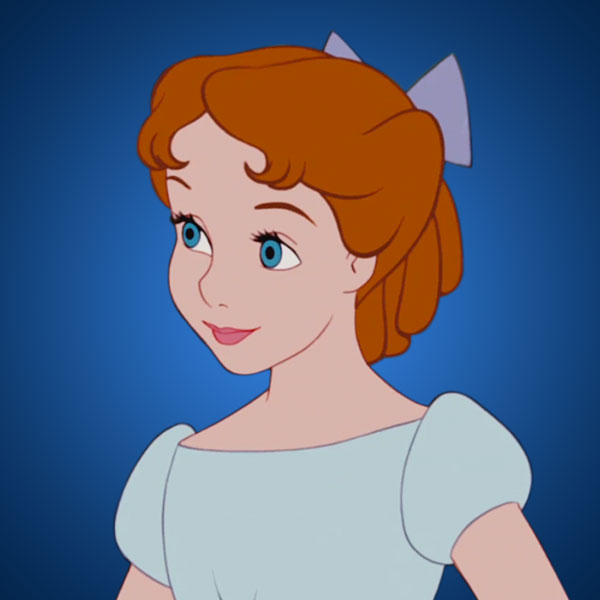

ALL children, except one, grow up. They soon know that they will grow up, and the way Wendy knew was this. One day when she was two years old she was playing in the garden, and she plucked another flower and ran with it to her mother. I suppose she must have looked rather delightful, for Mrs. Darling put her hand to her heart and cried, "Oh, why can't you remain like this for ever!" This was all that passed between them on the subject, but henceforth Wendy knew that she must grow up. You always know after you are two. Two is the beginning of the end.
